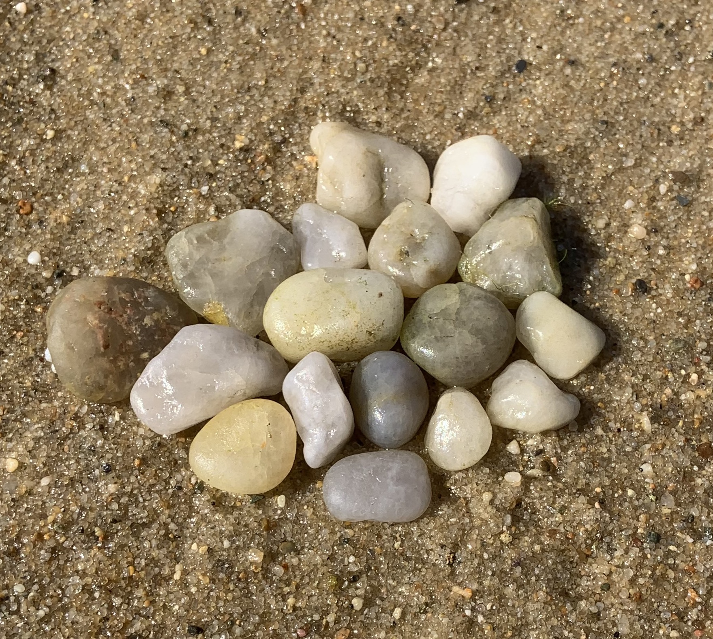
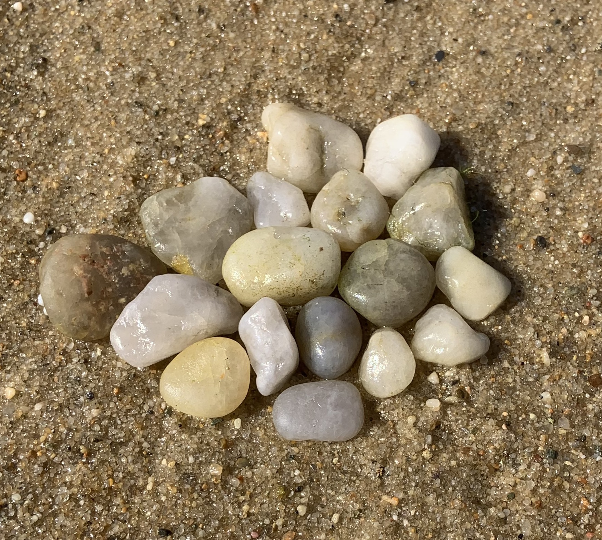
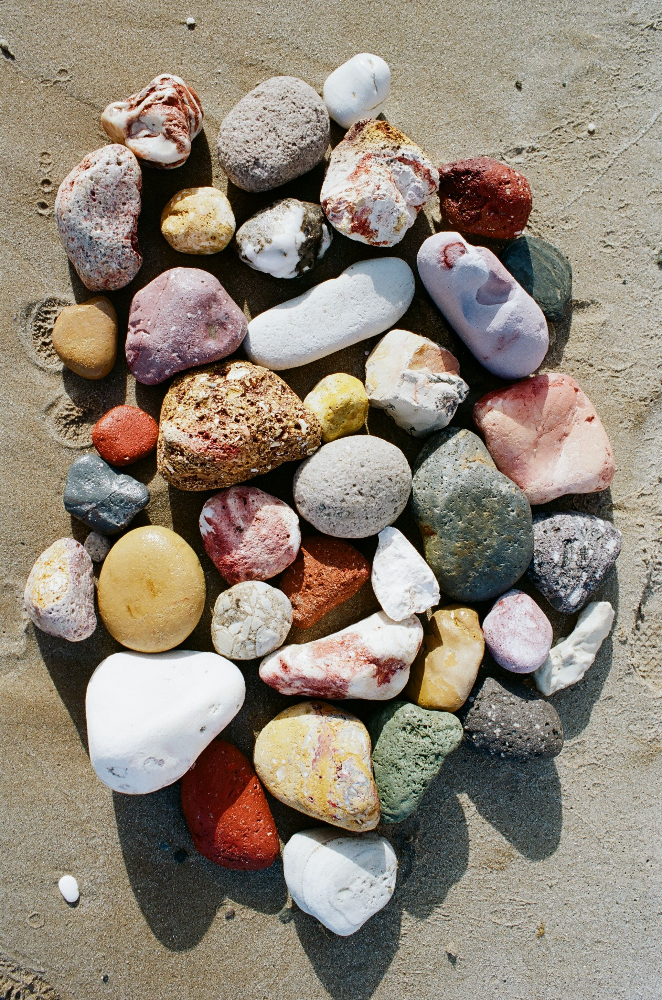
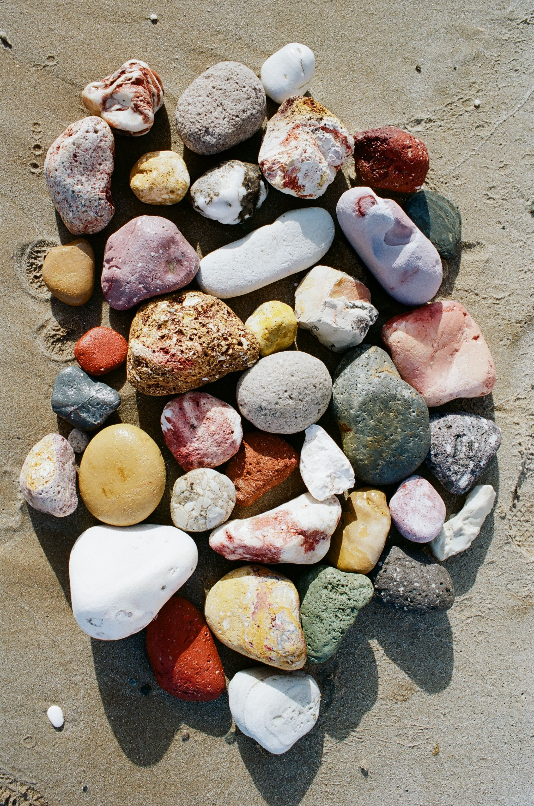

For the last few years I have been constructing what I call "rock quilts" in nature. On hikes or on beaches I collect a series of rocks or other natural material and create a quilt on a flat surface of the ccollection I have gathered. This tradition has followed me in my travels and provides me with a sense of connection with the places I am in.


 


 



Since starting the practice I have introduced the idea to friends who have sent me photos of their own rock quilts they have created during their adventures. While some may consider it interfering with natural beauty, I consider it an opportunity to reflect on the beauty within nature and to see the dazzling diversity of natural phenomena all around us.